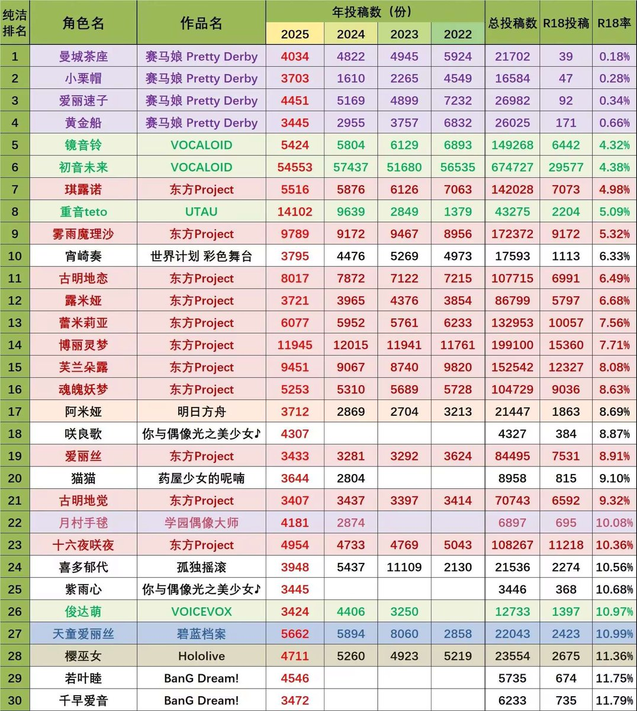

腋窝
@mofuwo8964
拜托不要胡搅蛮缠了…我是因为你和我共同互关多才一直回复你的…我不只是因为她zng粉丝多才讨厌她，但是她zng粉丝多也是我讨厌她的一个原因，这两者真的不一样。
其次我真的没有时间和精力在互联网上和人具体说明我为什么讨厌一个纸片人，你喜欢丰川祥子就会有人讨厌丰川祥子，就像有人爱吃香菜有人不爱吃香菜一样…为什么不允许别人有和你不同的观点呢。。

单纯爱祥子
@Choumodujiang_
@mofuwo8964 @taffylovedj 那我可以理解为你也讨厌祥子，素世，高松灯等角色吗，毕竟你说你taoyanzng多的角色，千早爱音粉丝zng占比比他们少多了啊我看 https://t.co/W83zV1TmNC